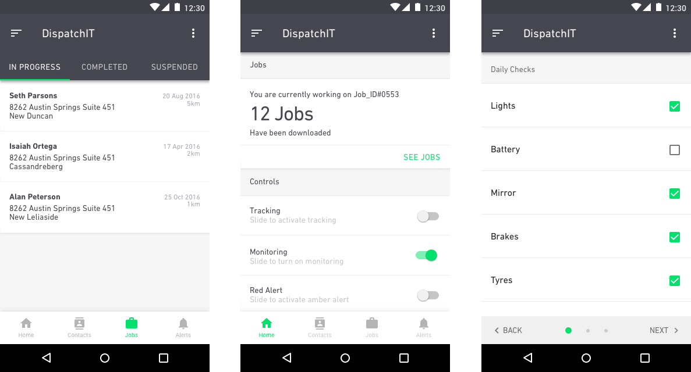

Building a fleet management solution
This project took place between July 2016 and October 2016. I was an interaction designer making up a small team that consisted two senior engineers and an engineering intern. I was responsible for initial research, interaction design, visual design and front-end development.
Unfortunately, most of the work that will be shown here didn’t get shipped due to reasons that I can’t publicly disclose. What I can tell you however, is that this was one product that definitely needed some love.
Overview
Open Dispatch is a fleet management application designed to provide mobile teams such as technicians and drivers an intuitive and unobstructive experience with which to carry out their work. Fleet managers, back office managers and workshop operators are also able to view real-time updates of the progress made by field agents.

The Material Design Guidelines came in pretty handy
How do we improve workforce productivity, whilst making communication with the backoffice more seamless?
This was an early goal-specific question that we had asked ourselves. Productivity is critical for a mobile workforce to operate at an optimal level. Moreso, if the backoffice team and the field agents were not communicating well, then that in itself would be another problem.
Thus, the more connected a workforce is to the business, the more productive they become. This problem is critical to solve because if a workforce is not productive, then not only may there be considerable revenue decrease from the business end, but also business customers might opt to switch supplier.
Approach
My lack of domain knowledge in this particular space meant that I needed to dive in, and immerse myself as thoroughly and as quickly as possible. Due to a very limited timeline, I had to resort to good old desk research. That basically translates to having twenty browser tabs open, research articles, blogs a plenty and whatever else I could get my hands on to inform both myself and the product decisions I would eventually make.
I didn’t do this alone. I believe that the collective mind is better than the singular mind when it comes to collecting, understanding and then synthesizing research. Sharing every last scrap of information we could find with each other, was essential, as it kind of helped us prepare mentally for the ideation process.
Getting to know our users
Solution
We chose to leverage Google’s Material Design language because as a team we felt that it was more suitable for a product that’s meant to be used on multiple devices and platforms. It also gives us the comprehensiveness and flexibility we needed to be able to communicate depth and motion when necessary throughout the different elements and interactions we incorporated into the product.